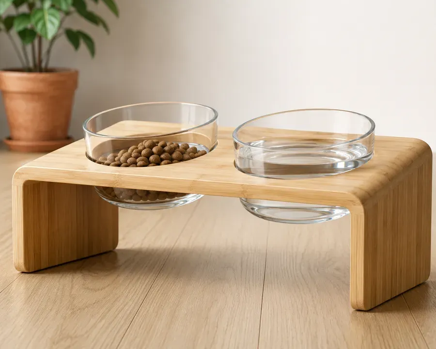

Храна и вода
Направите идеално место за храњење своје мачке, водећи рачуна о удобности и природним потребама.
1. Избор чинија
Материјал је важан. Пластика скупља бактерије и може изазвати акне на бради. Препоручени материјали: стакло, керамика и нерђајући челик.
2. Идеално место
Мачке воле навике и сигурност. Никад не стављајте храну близу тоалета.
- Миран кутак без промаје;
- Далеко од бучних уређаја;
- Поглед на собу ради осећаја сигурности.
3. Удобна висина
Чиније на постољу смањују оптерећење врата и зглобова, нарочито код старијих мачака. Нагиб чиније под правим углом од 15 степени чини гутање природнијим. Изаберите висину према висини мачке док стоји.

4Савет: димензије чиније
Савет
Ширина чиније: унутрашњи пречник треба да буде бар 1.5–2 пута шири од лица мачке (са брковима). За већину одраслих мачака оптималан пречник је 15–18 цм; за велике расе (као што је мејн кун) 18–22 цм. Ако је пречник мањи од 12–13 цм, бркови мачке ће стално додиривати ивице.
Дубина чиније: 2–4 цм је идеално и за суву и за влажну храну. Висина ивице треба да буде око 1/2–3/4 висине лица мачке. Ивице више од 5–6 цм погодне су само за веће количине хране и мање су практичне за свакодневно храњење.

5Чишћење и одржавање фонтане за воду за мачке
Увод
Ово је моје лично искуство са чишћењем и одржавањем фонтане за воду за мачке. Желим да вам испричам о средствима за чишћење, алатима и начинима чишћења које сам користим.
Одлука о томе како да чистите фонтану и обезбедите удобност и добробит своје мачке остаје на вама. Пре употребе средстава за чишћење прочитајте препоруке произвођача и уверите се да изабрани производи одговарају вашем моделу фонтане.
1. Средства за чишћење и алати
Средство бр. 1
Средство за прање посуђа које користим за претходно чишћење фонтане. Помаже да се уклоне слузави наслаги и површинска прљавштина.
- Denkmit Ultra Sensitive
- Sodasan Sensitive
- Sonett Sensitiv
- Ecover Zero
- ATTITUDE Little Ones
- и сл. — слични производи у вашем граду
Средство бр. 2
Средство за обраду пластичних површина које долазе у додир са пијаћом водом, које треба користити према упутству произвођача. Користим га разблаженог да потопим поједине делове фонтане.
- membraclean Drinking Water Treatment „Tierisch gut“
- Purogene
- Micropur Forte
- Yachticon Aqua Clean
- Milton
- и сл. — слични производи у вашем граду. ВАЖНО — поштујте упутство произвођача и компатибилност са површином која се обрађује и добро исперите површине после обраде.
Потребни алати
За чишћење ће ми требати:
- Мала четка за чишћење са влакнима средње тврдоће.
- Обичан сунђер са меканом страном.
- Посебна посуда у коју стају сви растављени делови фонтане.
- Тањир или друга чиста површина за привремено одлагање филтера.
Како изабрати четку за чишћење?
Важно је да изаберете четку што мањег пречника. Њоме се могу очистити уски канали и тешко доступна места фонтане и пумпе.
2. Мере безбедности
При раду са средствима за чишћење важно је придржавати се потребних мера опреза. Ја лично увек користим заштитне рукавице.
Пре употребе пажљиво прочитајте упутства произвођача одговарајућих средстава. Поштујте препоручене размере разблаживања, време деловања и остала безбедносна упутства.
Додатне мере заштите треба бирати узимајући у обзир својства коришћених производа и препоруке произвођача.
Не мешајте различита средства за чишћење међусобно, осим ако произвођачи то изричито не дозвољавају.
Пошто је фонтана намењена давању пијаће воде животињи, потребно је уверити се да коришћена средства одговарају за чишћење тих површина. После обраде добро исперите све делове да бисте уклонили остатке средстава за чишћење.
3. Припрема фонтане
Пре почетка чишћења искључујем фонтану из струје и растављам је на појединачне делове.
Све скидиве делове треба одвојити једне од других да би се темељно очистила свака површина, укључујући тешко доступна места.
Пре почетка чишћења треба извадити и филтере.
Ако планирате да поново користите филтере, ставите их током чишћења на суву, чисту површину.
Ако ћете ставити нов филтер, претходно га исперите под млазом воде према упутству произвођача.
4. Претходно чишћење
За прву фазу чишћења користим средство бр. 1 и обичан сунђер.
Меканом страном сунђера чистим све површине фонтане. У овој фази уклањам слузаве наслаге и главну површинску прљавштину.
Важно је чистити не само спољне површине и лако доступна места, већ и унутрашње делове на којима се може нагомилати прљавштина.
Чишћење пумпе
Посебну пажњу посвећујем пумпи, јер се и у њој могу нагомилати слуз и друга прљавштина.
Да бисте дошли до ротора пумпе, треба скинути спољну заштитну решетку. После тога постају доступне лопатице ротора, које се могу пажљиво очистити четком.
Четка малог пречника омогућава да се дође чак и до тешко доступних места.
По потреби пажљиво четком чистим и излазни канал пумпе, кроз који вода иде у фонтану.
Пазите да не оштетите унутрашње компоненте. Не потапајте пумпу у воду, осим ако произвођач то изричито не дозвољава.
5. Потапање појединих делова
После претходног чишћења стављам растављене делове фонтане у посебну посуду и додајем воду са разблаженим средством бр. 2.
У мом случају користим размере произвођача за три литра воде у посуди.
У мом случају остављам делове у раствору 20 минута према упутству произвођача. Притом сви делови који се смеју потапати морају бити потпуно прекривени течношћу.
Обратите пажњу: наведена доза и време деловања засновани су на мом личном искуству. Пре употребе обавезно проверите препоруке произвођача, посебно препоручену концентрацију, време деловања и компатибилност средства са материјалима фонтане.
Не потапајте пумпу и друге електричне компоненте, осим ако то није изричито предвиђено упутством произвођача.
6. Темељно испирање
После потапања неколико пута добро исперем све делове под млазом воде.
У овој фази важно је уклонити све остатке средстава за чишћење и растворену прљавштину са свих површина и делова.
Посебну пажњу треба посветити следећим местима:
- Унутрашњим каналима и уским отворима.
- Лопатицама ротора и доступним унутрашњим деловима пумпе.
- Излазном каналу пумпе.
- Местима на којима се може нагомилати слуз.
- Површинама које су у непосредном додиру са пијаћом водом.
Пре склапања фонтане уверите се да су сви делови добро испрани и да на њима није остао траг средстава за чишћење.
7. Постављање филтера
После чишћења враћам филтере или користим нове.
Ако сте привремено извадили филтере и планирате да их поново користите, придржавајте се препорука произвођача о условима чувања. Током чишћења стављам филтере на сув, чист тањир.
Ако постављате нов филтер, претходно га исперите под млазом воде према упутству произвођача.
Ово је посебно важно за филтере са активним угљем, јер при првом испирању из њих може излазити угљена прашина.
Могућност поновне употребе филтера зависи од његове врсте и препорука произвођача. Ако произвођач прописује замену филтера, не треба га поново постављати само зато што споља изгледа чисто.
8. Колико често чистим фонтану
Придржавам се следећег распореда одржавања.
Једном недељно: потпуно ручно чишћење фонтане уз употребу оба средства за чишћење и четке.
Једном у две недеље: замена филтера — и филтера пумпе и великог белог филтера унутар фонтане.
Важно: интервали замене могу се разликовати у зависности од произвођача, квалитета воде и степена запрљаности. Зато се додатно водите упутством за ваш модел фонтане.
9. Пуњење фонтане
Код мог модела фонтане једно пуњење батерије обично траје око две недеље рада у режиму сензора покрета.
Ово је моје лично искуство. Стварно трајање батерије може се разликовати у зависности од модела, стања батерије и интензитета коришћења.
Важна напомена
Овај чланак описује мој лични приступ чишћењу фонтане за воду за мачке и није универзална препорука за све моделе.
Пре употребе средстава за чишћење проверите да ли одговарају материјалима вашег уређаја и да ли су безбедна за површине које долазе у додир са пијаћом водом ваше мачке.
Упутства произвођача фонтане, филтера и средстава за чишћење увек имају предност.
Још у овом одељку
Информације у апликацији прикупљене су из отворених извора и искуства власника мачака. Оне не замењују савет и преглед код ветеринара. Одлуке о здрављу и нези љубимца доноси власник — ако сте у било каквој недоумици, обратите се ветеринару.
Све ово постоји у апликацији Cat First
Чланци, контролне листе и прва помоћ на телефону, чак и без интернета.